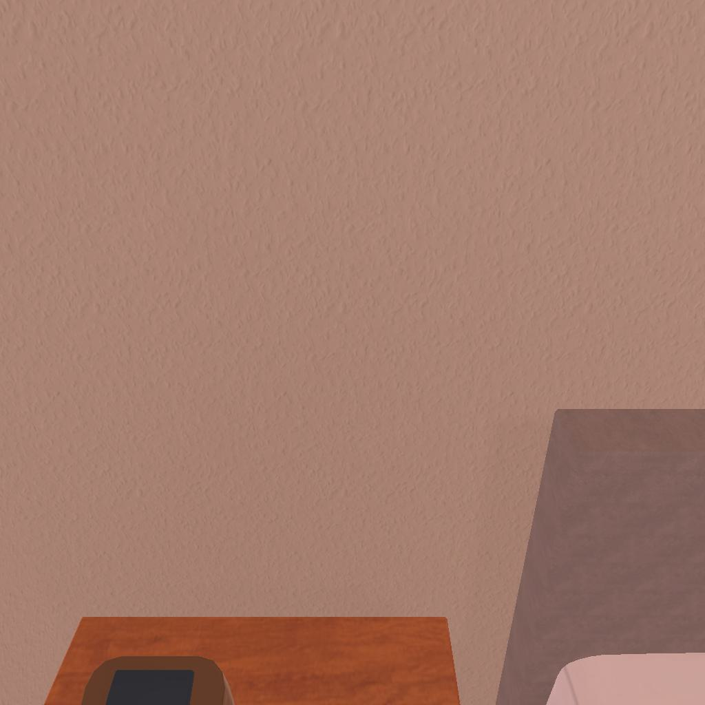

---------------------------------------------------------task: 2---------------------------------------------------------
--------------------------------------------------------------------------------------------------------------------------------------------------------------------
--------------------------------------------------------------------------------------------------------------------------------------------------------------------
Step:--------------------------------------------------------------------------1-------------------------------------------------------------------------------
----------------------------------------
VLM Prompt:
Image1:
Image2:
**Instruction**
1. Analyze the provided images to identify all visible household objects and compare the difference between images (e.h. whether the object is opened or not and taken on hand or not), focusing on those relevant to the task description "examine the pen with the desklamp."
2. Use the analysis of images and the task hint "The agent must find an object of the desired type, locate and turn on a light source with the desired object in-hand." to answer the question: what is the most reasonable action in the choices for the task description "examine the pen with the desklamp"?
3. Decide and write the answer using the template: The answer is: (i): , where i is the real number. If there is no desired object in images, search every place based on **Initial Observation** to find the object. And if no one is exactly correct, choose a similar answer.
**Initial Observation**
You are in the middle of a room. Looking quickly around you, you can see bed (1-2), dresser (1), drawer (1-11), sidetable (1-2), desk (1), garbagecan (1), safe (1)
**Answer Choices**
(1): go to bed 1
(2): go to dresser 1
(3): go to bed 2
(4): go to drawer 1
(5): go to sidetable 1
(6): go to drawer 2
(7): go to sidetable 2
(8): go to drawer 3
(9): go to drawer 4
(10): go to garbagecan 1
(11): go to drawer 5
(12): go to drawer 6
(13): go to drawer 7
(14): go to drawer 8
(15): go to drawer 9
(16): go to drawer 10
(17): go to drawer 11
(18): go to safe 1
(19): take bowl 1 from desk 1
(20): take mug 1 from desk 1
(21): take pencil 1 from desk 1
(22): examine desk 1
**Answer**
Let's think step by step by following the instructions.
----------------------------------------
----------------------------------------
Original Response:
Image 1:
- No visible household objects on the desk.
Image 2:
- Visible household objects on the desk include a bowl, a mug, and a pencil.
Difference between images:
- In Image 2, the bowl, mug, and pencil are present on the desk, while in Image 1, they are not.
Task description analysis:
- The task is to "examine the pen with the desklamp." This means the agent needs to find a pen and a desklamp to examine the pen with light.
Task hint analysis:
- The agent must find a pen, locate and turn on a light source with the pen in hand to examine it.
Based on the initial observation, the desklamp is not mentioned, but it is reasonable to assume it might be on or near the desk since that's a common location for a desklamp.
Answer Choices analysis:
- Choices (1) through (18) involve going to various furniture pieces, which does not directly address the task of examining the pen with the desklamp.
- Choice (19) is to take the bowl, which is not relevant.
- Choice (20) is to take the mug, which is not relevant.
- Choice (21) is to take the pencil, but the task specifies a pen, not a pencil, so it may not be correct. However, it is common to confuse pens and pencils in casual speech, so it's still a potential action.
- Choice (22) is to examine the desk, which could lead to finding the pen and desklamp.
Considering all the details, the most reasonable action to accomplish the task would be to examine the desk, which may lead to finding both the pen and the desklamp. If the pen is indeed the pencil mentioned, then taking the pencil would be the next reasonable step.
The answer is: (22): examine desk 1
----------------------------------------
----------------------------------------
>>> Refine Original VLM Response and Get Pure Action: examine desk 1
----------------------------------------
-----------------------------------------------------------------
Running time: 14.190203189849854 seconds
Total Money: 0.7188399999999999
-----------------------------------------------------------------
-----------------------------------------------------------------
Text Observation:On the desk 1, you see a bowl 1, a mug 1, and a pencil 1.
-----------------------------------------------------------------
UNSUCCEED